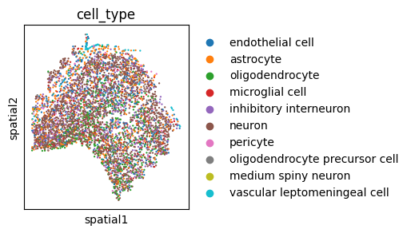
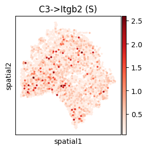

MouseBrain (MERFISH) Analysis Tutorial
Data availability: All processed spatial transcriptomics datasets are publicly available on Zenodo: https://doi.org/10.5281/zenodo.17522268
[1]:
from models.SCILD_main import *
from models.help_func import create_LRDatabase_D, compute_spatial_autocorrelation
import scanpy as sc
import squidpy as sq
import warnings
warnings.filterwarnings('ignore')
np.random.seed(42)
Import data
[2]:
adata = sc.read_h5ad('./data/MouseBrainMERFISH_adata_processed.h5ad')
adata
[2]:
AnnData object with n_obs × n_vars = 4347 × 374
obs: 'age', 'clust_annot', 'slice', 'cell_type_annot', 'cell_type', 'disease', 'organism', 'sex', 'tissue', 'development_stage', 'x', 'y', 'n_genes'
var: 'feature_name'
uns: 'cell_type_colors', 'tissue_colors'
obsm: 'spatial'
[3]:
plt.rcParams['figure.figsize'] = [3, 3]
sc.plotting.spatial(adata, color="cell_type", spot_size=30)

[4]:
plt.rcParams['figure.figsize'] = [3, 3]
sc.plotting.spatial(adata, color="tissue", spot_size=30)

Create L-R database
[5]:
LRDatabase_D = create_LRDatabase_D(
adata,
min_cell_pct=0.001,
database='CellChat',
species='mouse'
)
[6]:
LRDatabase_D.shape
[6]:
(5, 7)
Run SCILD
[7]:
CCCProb = SCILD(adata=adata,
LRDatabase_D=LRDatabase_D,
neighbor_k=5,
alpha_q=0.1,
alpha_f=0.1,
alpha_g=0.1,
niter_max=100,
eps=1e-5,
verbose=True,
plot_error=True
)
CCCProb.preparing()
nl = CCCProb.nl
nr = CCCProb.nr
ns = CCCProb.ns
print('The number of ligand is: ' + str(nl))
print('The number of receptor is: ' + str(nr))
print('The number of spot is: ' + str(ns))
*************Preparing*************
neighbor_k: 5
The number of ligand is: 5
The number of receptor is: 7
The number of spot is: 4347
[8]:
mu0 = np.random.random(nl * ns).reshape(-1, 1)
v0 = np.random.random(nr * ns).reshape(-1, 1)
CCCProb.solving_optimization(mu0, v0)
*************Solving*************
The relative error is: 0.08031515326108503
The relative error is: 0.01142103570565849
The relative error is: 0.0015690243165770855
The relative error is: 0.0002141699064941439
The relative error is: 2.920718958686283e-05
The final relative error is: 8.836853362322644e-06
The total iteration step is: 56

[9]:
CCCProb.adata
[9]:
AnnData object with n_obs × n_vars = 4347 × 374
obs: 'age', 'clust_annot', 'slice', 'cell_type_annot', 'cell_type', 'disease', 'organism', 'sex', 'tissue', 'development_stage', 'x', 'y', 'n_genes'
var: 'feature_name'
uns: 'cell_type_colors', 'tissue_colors'
obsm: 'spatial', 'sum-sender-Q', 'sum-sender-P', 'sum-receiver'
Extract LR CCC
[10]:
CCCProb.query_all_LR()
[11]:
CCCProb.tensor_P.shape
[11]:
(4347, 4347, 5, 7)
[12]:
res_dict = tensor_to_method_result(CCCProb.tensor_P,
list(CCCProb.LRDatabase_D.index),
list(CCCProb.LRDatabase_D.columns))
len(res_dict)
[12]:
35
[13]:
res_dict = filter_method_result_by_LR_database(res_dict, CCCProb.LRDatabase_D)
len(res_dict)
[13]:
8
[14]:
import pickle
with open("./results/MouseBrainMERFISH_SCILD_result.pkl", "wb") as f:
pickle.dump(res_dict, f)
Visualization
select L-Rs to show (spatial)
[15]:
CCC_df = CCCProb.compute_TSSR()
CCC_adata = sc.AnnData(CCC_df)
CCC_adata.obsm['spatial'] = adata.obsm['spatial']
CCC_adata
[15]:
AnnData object with n_obs × n_vars = 4347 × 16
obsm: 'spatial'
[16]:
LR_df_spatial = compute_spatial_autocorrelation(CCC_adata)
LR_df_spatial.sort_values('moran_I', ascending=False).head()
[16]:
| moran_I | p_value | |
|---|---|---|
| C4b->Cr2 (R) | 0.047813 | 2.025831e-13 |
| C4b->Cr2 (S) | 0.044414 | 8.652167e-12 |
| Ccl2->Ccr2 (R) | 0.012286 | 5.560915e-02 |
| Vip->Vipr2 (S) | 0.011768 | 6.652739e-02 |
| C3->Itgb2 (S) | 0.010452 | 1.023615e-01 |
[17]:
CCCProb.adata.obs[CCC_df.columns] = CCC_df
CCCProb.adata.obs.head()
[17]:
| age | clust_annot | slice | cell_type_annot | cell_type | disease | organism | sex | tissue | development_stage | ... | C3->Itgb2 (S) | C3->Itgb2 (R) | C4b->Cr2 (S) | C4b->Cr2 (R) | Ccl2->Ccr2 (S) | Ccl2->Ccr2 (R) | Crh->Crhr2 (S) | Crh->Crhr2 (R) | Vip->Vipr2 (S) | Vip->Vipr2 (R) | |
|---|---|---|---|---|---|---|---|---|---|---|---|---|---|---|---|---|---|---|---|---|---|
| 122184445827896016775977821870080586530 | 24wk | Astro-2 | 0 | Astro | astrocyte | normal | Mus musculus | female | pia mater | 24 weeks | ... | 0.220301 | 0.220301 | 1.021835 | 1.021835 | 0.726703 | 0.726703 | 0.639637 | 0.639637 | 1.040522 | 1.040522 |
| 230772751864841308557325187914799643743 | 24wk | Astro-1 | 0 | Astro | astrocyte | normal | Mus musculus | female | pia mater | 24 weeks | ... | 0.202272 | 0.202272 | 0.625757 | 0.625757 | 0.726702 | 0.726702 | 0.639636 | 0.639636 | 0.731970 | 0.731970 |
| 323408616655159645604868800726998552866 | 24wk | Olig-2 | 0 | Olig | oligodendrocyte | normal | Mus musculus | female | pia mater | 24 weeks | ... | 0.202273 | 0.202273 | 0.625759 | 0.625759 | 0.726703 | 0.726703 | 0.639637 | 0.639637 | 0.731971 | 0.731971 |
| 320911307030956433707833585273342256735 | 24wk | Astro-1 | 0 | Astro | astrocyte | normal | Mus musculus | female | pia mater | 24 weeks | ... | 0.202273 | 0.202273 | 0.625759 | 0.625759 | 0.726703 | 0.726703 | 0.639637 | 0.639637 | 0.731971 | 0.731971 |
| 47506129704837753302677252448919453232 | 24wk | Peri-1 | 0 | Peri | pericyte | normal | Mus musculus | female | pia mater | 24 weeks | ... | 0.218756 | 0.218756 | 0.990255 | 0.990255 | 0.726703 | 0.726703 | 0.639637 | 0.639637 | 0.731971 | 0.731971 |
5 rows × 29 columns
[29]:
plt.rcParams['figure.figsize'] = [3, 3]
sc.pl.spatial(CCCProb.adata, spot_size=50, color="C3->Itgb2 (S)", cmap='Reds', img_key=None)

[30]:
plt.rcParams['figure.figsize'] = [3, 3]
sc.pl.spatial(CCCProb.adata, spot_size=50, color=["C3", "Itgb2"], cmap='Reds', img_key=None)

Cell-group level results
[20]:
from models.help_func import aggregate_to_group
[21]:
cell_to_group = adata.obs['tissue'].to_dict()
group_result = {}
for lr_key, matrix in res_dict.items():
group_matrix = aggregate_to_group(matrix, cell_to_group)
group_result[lr_key] = group_matrix.values
[23]:
cell_to_group = adata.obs['cell_type'].to_dict()
group_result = {}
for lr_key, matrix in res_dict.items():
group_matrix = aggregate_to_group(matrix, cell_to_group)
group_result[lr_key] = group_matrix.values